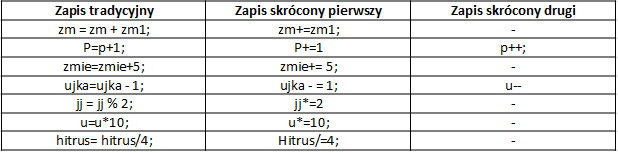

1. Co to jest inkrementacja ?
Operator inkrementacji (++), czyli zwiększenie wartości zmiennej o stałą wartość najczęściej o jeden (1). Np. i=i+5; i=i+1; lub w formie skróconej i++;
2. Co to jest dekrementacja?
Operator dekrementacji (--), czyli zmniejszenie wartości zmiennej o stałą wartość najczęściej o jeden (1). Np. x=x+5; x=x-1; lub w formie skróconej x--;
3. Czym różni się ++i od i++?
Formy zapisu:
- Przedrostkowa np. (++i --x) najpierw zmienna jest zwiększana o jeden, a następnie ta zwiększona wartość jest brana do obliczeń.
- Przyrostkowa (końcówkowa) (i++ x--) najpierw brana jest stara wartość zmiennej do obliczeń a dopiero później jest ona zwiększana o jeden.
4. Uzupełnij tabelę operacji:

5. Co oznacza: ∑?
∑ - oznacza znak sumy i czyta się sigma. U góry i na dole są liczby, na dole liczba początkowa, a u góry liczba końcowa. Liczby zwiększają się o jeden.
4
suma = ∑ i2 = 22+ 32 + 42 = 29
2
3
suma = ∑ i/i+2 = 1/3 + 2/4 + 43/30
1
1
suma = 1+8+27+64 = ∑ i3
4
6. Zapisz za pomocą sumy sumę szeregu harmonicznego sumując od pierwszego do milionowego wyrazu
an = 1/n
1000000
suma = ∑ 1/i
i = 1
NWD (14, 21) = 7
NWD (1517, 1073) = 37
1517 | 37
41 | 41
1 |
1073 | 29
37 | 37
1 |